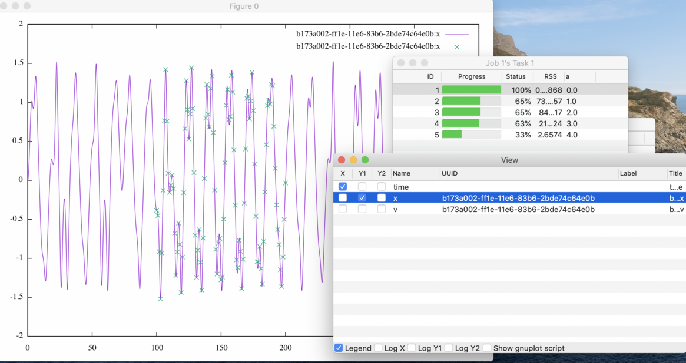

Flint 2.4: The User Guide
Table of Contents
- 1. Introduction
- 2. Getting started
- 3. Graphical User Interface
- 3.1. Launching Flint
- 3.2. Quitting Flint
- 3.3. Loading models
- 3.4. Configuring simulation tasks
- 3.5. Starting simulation
- 3.6. Controlling simulation jobs
- 3.7. Viewing simulation log
- 3.8. Visualizing simulation results
- 3.9. Saving output data
- 3.10. Fitting parameters via the least-squares method
- 3.11. Exporting C source code from model
- 3.12. Preference
- 3.13. Shortcut keys
- 4. Command Line Interface
- 5. Additional utility programs
- 6. Frequently Asked Questions (FAQ)
- 7. References
This document describes how to use Flint 2.4, a simulator for biological and physiological models. Readers also find some platform-specific notes and trouble-shooting techniques that users would like to know when using Flint.
1 Introduction
Understanding the dynamics of living organisms often requires a mathematical model that describes the hypotheses to be tested. It is widely recognized that the class of ordinary differential equations (ODE) is suitable for describing the time course of variables in a deterministic system, stemming from a simple assumption about the rate of their change. One such example is the chemical reaction accelerated by an enzyme following Michaelis-Menten kinetics; another is the action potential of cardiac cells driven by modulation of ion channels. By virtue of differential equations, these celullar models can be integrated into models at the tissue or organ level. In fact, ways to integrate a computational model of the physiological functions of the whole individual have been explored since the end of the last century, under the name physiome [1].
It is, however, technically challenging for practitioners in the field of biology or physiology to express their hypotheses on biological organisms in a precise system of ODEs. In order to make it easier to edit a model in problem that implicitly specifies the ODEs, several domain-specific languages have been proposed and standardized, including CellML [2], the Physiological Hierarchy Markup Language (PHML) devised by Asai and colleagues [3], and the Systems Biology Markup Language (SBML) devised by [4]. Although the design principles of each modeling language vary, computational analysis of any model in these languages comprises a shared set of procedures based on the theory of differential equations and dynamical systems.
Flint is a simulator software for models written in the above languages, and aims to provide an open, language-agnostic resource for reproducible simulation studies. The simulator allows users to transform a given model into a system of ODEs and solve it in a numerical manner. It also supports stochastic differential equations (SDE), a non-deterministic extension of ODEs, which makes it possible to involve random elements, e.g. noise, in the dynamics.
1.1 Brief summary about Flint 2.4
Flint 2.4 is new implementation of Flint 1.x, a simulator for biological and physiological models. Flint can run simulations of multi-level physiological models written in PHML. It means that Flint parses given models, performs numerical analysis for their simulation, and renders simulation outcome into a line graph via gnuplot. Likewise, Flint can handle CellML and SBML as well as SBML-PHML hybrid models.
1.1.1 Markup languages
Flint 2.4 supports the following standard languages of models:
- PHML (including its precursor ISML [5])
- SBML
- CellML
1.1.2 Available numerical algorithms for ordinary differential equations
Flint 2.4 supports the following algorithms to solve ODEs numerically:
- Euler method
- Runge-Kutta 4th-order method
- Adaptive stepsize Runge-Kutta method, based on the ARKode solver of SUNDIALS [6]
1.1.3 Available numerical algorithms for stochastic differential equations
Flint 2.4 also supports the following algorithms to solve SDEs numerically:
- Euler-Maruyama method [7]
1.2 Notation
In this document, command lines in a shell or the command prompt on Windows are formatted as in the following example:
echo this is a command line.
2 Getting started
This chapter explains how to obtain and install Flint, and describes how to run a simulation.
2.1 Supported platforms
Flint 2.4 runs on several supported platforms, including:
- Windows 7 or later;
- macOS: OS X El Captian (10.11) or later;
- Linux distributions such as Debian 10, Ubuntu 18.04, and RHEL/CentOS 7 or 8.
2.2 Download and install Flint 2.4
Flint project distributes Flint 2.4’s x86-64 binary installers for Windows, macOS, and CentOS/RHEL 7 or 8.
2.2.1 On Windows
Please download the installer package Flint-2.4.0-windows.x86_64.msi at
https://sourceforge.net/projects/flintproject/files/Flint/.
Double-clicking the .msi package will start the installation process.
If installed successfully, Flint’s executable program will be found at
C:\Program Files\Flint\flint.exe.
2.2.2 On macOS
Please download the installer package Flint-2.4.0-mac.dmg at
https://sourceforge.net/projects/flintproject/files/Flint/.
The .dmg archive for macOS contains Flint 2.4’s .pkg file; extracting and
double-clicking it to start an application bundle called
Flint.app.
2.2.3 On CentOS/RHEL
Please download Flint-2.4.0-el7.x86_64.zip or Flint-2.4.0-el8.x86_64.zip
at https://sourceforge.net/projects/flintproject/files/Flint/, depending
on the major version of your OS.
Unzipping the archive, run the following command on a bash-like shell to install
RPM packages in it:
unzip Flint-*-el*.x86_64.zip
cd Flint-*-el*.x86_64
sudo rpm -Uvh --replacepkgs flint-*.rpm
Once installed, Flint’s executable will be found at
/opt/flint/bin/flint.
2.2.4 On other supported OSes
In principle Flint 2.4 runs on any Linux distribution coming up with GTK 2 or 3.
You can build Flint from its source tarball, available at
https://github.com/flintproject/Flint/archive/Flint-2.4.0.tar.gz,
by following the instructions in INSTALL.org found in the archive.
2.3 Try your first simulation with Flint 2.4
This section describes a simple procedure with Flint 2.4 to run a simulation of an example PHML model, which replicates the system of ordinary differential equations about membrane potentials in nerve introduced by [8]. If you have installed Flint 2.4 via one of its binary installer packages, the model file can be found at
C:\Program Files\Flint\example\HodgkinHuxley_1952_neuron_model.phml
on Windows,
Flint.app/Contents/Resources/example/HodgkinHuxley_1952_neuron_model.phml
on macOS, or
/opt/flint/example/HodgkinHuxley_1952_neuron_model.phml
on CentOS/RHEL. Otherwise you can also download it from https://github.com/flintproject/Flint/tree/Flint-2.4.0/example/HodgkinHuxley_1952_neuron_model.phml.
- Launch Flint
To launch Flint, double-click
C:\Program Files\Flint\flint.exe on Windows,
Flint.app on macOS, or /opt/flint/bin/flint on CentOS/RHEL.
It shows a window like Fig. 1.

Figure 1: The initial window of Flint.
- Open a model
In the “File” menu, select “Open” to choose a model file. Then you will see a file dialog like Fig. 2.

Figure 2: The file dialog to open a model.
Select HodgkinHuxley_1952_neuron_model.phml in the file dialog and click “Open” button.
Then the model window will appear as in Fig. 3.
On macOS, opening a form by Command + Shift + g, one can
specify an absolute path in the application bundle Flint.app.

Figure 3: The model window.
- Choose duration and time step
Specify the duration of simulation in “Simulation Length” and the time step length of the simulation in “Simulation Time Step” optionally.
- Run a simulation
Click the “Run” button to start a simulation.
Once simulation started running, the progress bar will appear in the control panel in the right side like Fig. 4, and both the cross mark (as “Cancel”) and “Detail” buttons will be enabled.

Figure 4: The progress bar for the model.
Wait until the status bar tells that the simulation completed (see Fig. 5).

Figure 5: The status bar indicates the simulation completed.
- See detail of the simulation
Click the “Detail” button to get the simulation result. Then a detail window will appear as in Fig. 6.

Figure 6: The detail window.
- Select ordinates
Click the “View” button on the detail window, then a plot window to render line graphs about the simulation result, like Fig. 7.

Figure 7: The plot window.
Check the Y1 column of “V” in the variable list, which calls gnuplot.
Soon the corresponding line graph will appear on a separate window,
like Fig. 8.

Figure 8: The plot window with “V” on Y1.
Moreover you can also check the Y2 column of another variable “I_Na” in the
list to arrange two line graphs in the same canvas, as in
Fig. 9.

Figure 9: The plot window with “V” on Y1 and “I_Na” on Y2.
3 Graphical User Interface
Flint 2.4 comes with a graphical user interface out of the box. This chapter explains features of the GUI and how to use them.
3.1 Launching Flint
On Windows, double-clicking flint.exe in the start menu starts Flint.
On macOS, double-clicking Flint.app works similarly.
3.2 Quitting Flint
To quit Flint, use the menu “File”→“Exit”.
3.3 Loading models
Flint must load models before running simulations for them. Users tell Flint which model should be loaded by opening the model file. Loading a model can fail due to some reasons; for example, it may fail if the model file contains an error or unsupported elements. An error dialog will display a diagnosis message when loading a model fails. Once loading a model successfully, the model window shows up and stays in the main window until closed, like Fig. 10.
3.4 Configuring simulation tasks

Figure 10: The model window.
Before starting simulations for a loaded model, users may want to configure them in terms of numerical integration, simulation time, output data, and parameters.
3.4.1 Integration method
Users have to choose a solver method for ordinary differential equations or stochastic differential equations at the “Integration method” combobox. An error will occur at simulation time when choosing any method except the Euler-Maruyama method for a model including SDEs.
3.4.2 Simulation Length
Users must specify the total length of simulation time at the “Simulation Length” field; the given number is interpreted in terms of the selected time unit.
3.4.3 Simulation Time Step
Similarly to “Simulation Length”, users can specify the time step at the “Simulation Time Step” field.
3.4.4 Starting from
Users can specify when (in the sense of simulation time) output starts from at this field. By default, simulation process produces output from time 0.
3.4.5 Data Sampling
This setting is for determining how often the result data are written in. Note that the sampling rate does not affect the calculation for simulation.
3.4.6 Select output variables
Before starting simulations for a loaded model, users may want to choose a limited number of variables for output among available variables. Filtering output variables will reduce the burden of writing output, and thus may improve the simulation performance. The “Output Variables” panel (Fig. 11) allows user to select output variables by matching one of their properties with a given string. The possible target properties depend on the format of the model file, and are summarized in Table 1. With the “Filter Column” combo box one can choose the target. The “Filter Pattern” combo box chooses the way to interpret the given string: as a regular expression (default), or just as a fixed string.

Figure 11: The “Output Variables” panel.
| Model file format | properties |
|---|---|
| PHML | Physical-quantity name; Module name |
| SBML | Species or reaction name |
| CellML | Variable name; Component name |
3.4.7 Parameterize constant values
By default, Flint runs a single simulation job for each loaded model. It is also possible to start a simulation batch for each model with different values of parameters. A batch of simulations can result in multiple different trajectories of variables in the same model. Hereafter, we simply call each result from an element in the batch a trajectory.
In order to explain the feature to parameterize constants found in a model,
let’s define some technical terms as follows.
In Flint’s terminology, named numeric constants in the model are called
shortly “constants”.
For example, some of CellML’s variable=s have attribute
=initial_value, which is assigned to a constant number.
In PHML there is an element called static-parameter specifying a constant,
as well as initial-value.
SBML’s parameter element has attribute value assigned to a number.
All of them are constants in Flint’s context, and they are potential targets for
changing their values by some parameters.
However, make sure that a constant in the above sense is not a parameter
itself in Flint.
Rather, a constant can be parameterized by zero or more parameters.
In Flint’s terminology, a parameter is a named object assigned to a specific number for each trajectory. Let \(\mathcal{P}\) be the set of parameters. To configure a batch, every parameter is bound to its own set of possible values, called value-set. Let \(\mathcal{V}(p)\) be the value-set of parameter \(p\) in \(\mathcal{P})\). The whole set of possible tuples of multiple parameters is defined as the Cartesian product of multiple value-sets, i.e., \(\prod_{p \in \mathcal{P}} \mathcal{V}(p)\). (It is also possible to custom how to construct the whole set of value tuples for an advanced setting. Please read 3.4.7.4.) From now on, a pair \((\mathcal{P}, \mathcal{V})\) is called the parameter set as it determines the parameterization of a batch completely.
Given the parameter set of a batch, Flint will run as many simulations for the given model as the cardinality of the Cartesian product, i.e., \(\lvert \prod_{p \in \mathcal{P}} \mathcal{V}(p) \rvert\), by changing the assigned values from a tuple to another. In other words, each trajectory corresponds to a value tuple of the parameters.
Users can see and modify numeric values of constants in a loaded model,
such as the initial values of ordinary differential equations and values of
=static-parameter=s of PHML, at the “Parameters” panel.
The table at the “Parameters” consists of each row corresponding to a constant
element in the model; the “Expression” field of the row accepts an algebraic
formula defining the parameterized value of the constant.
The following 3.4.7.1 summarizes available operators in
the formula, which semantics conforms to MathML 3 in principle,
except infix operators such as +, *, etc.
For example, given parameters p and q, you can build a formula
like “2.5 * max(p, 1) - cos(q)”.
3.4.7.1 Available operators to build a formula
+(infix): addition-(infix): subtraction*(infix): multiplication/(infix): division%(infix): remainderabs,arccos,arccosh,arccot,arccoth,arccsc,arccsch,arcsec,arcsech,arcsin,arcsinh,arctan,arctanh,ceiling,cos,cosh,cot,coth,csc,csch,exp,floor,ln,log,max,min,power,root,sec,sech,sin,sinh,tan,tanh: mathematical functions

Figure 12: edit a parameter called p0

Figure 13: choosing value-set type
3.4.7.2 Edit the parameter set
In order to define or modify the parameter set, push button “Edit parameter
set” at first. Then a window will pop up. It allows users to see existing
parameters, add a new parameter (via the “+” button), delete existing
one (via the “-” button), and modify them (see
Fig. 12).
The name of a parameter is arbitrary, but must start with an alphabet or
underscore (_), followed by a sequence of alphabets, underscores, and/or
digits (0, 1, …, 9).
There are four types of value-sets: enum, interval, Gaussian, and uniform (see Fig. 13). For a value-set of type enum, each of possible values must be specified. On the other hand, only the lower and upper (both inclusive) of a range of values with a step are required to define a value-set of type interval. Note that possible values of an enum should be separated by a comma or a space. The latter two types of value-sets are for generating pseudo-random values according to specified probability distribution in simulation time.
3.4.7.3 Define constants by parameters
Once users have defined a parameter, it is available in the “Expression” field of any row in the “Parameters” table (see Fig. 14).

Figure 14: Parameterize a constant with parameter “p0”.
3.4.7.4 Control how to combine parameters
It will be often found that the whole set of possible tuples of the parameters becomes too big even for the case of a small number of the parameters, i.e., that \(\lvert \mathcal{P} \rvert\) is small. For example, if you use five parameters and each of them has a value-set of size 100, then the number of simulations in the batch is \(100^5\), which is more than \(2^{33}\), so the run will never finish within a realistic time frame.
To mitigate the explosion of the number of the combinations, there is a way
to skip some combinations; choose “zip” when creating an item by the
“+” button in the “Edit parameter set” dialog
(see Fig. 15).
Then, the value tuples of the parameters in the “zip” sub-tree are constructed
as like the zip() function of the Python standard library applies to their value-sets.
To be precise, let \(\{p_1, p_2, ..., p_m\}\) be the parameters in the sub-tree,
and \(n_i := \lvert \mathcal{V}(p_i) \rvert\).
The set of their value tuples is
\[
\left\{(v_{1 k}, v_{2 k}, ..., v_{m k}) \mid k = 1, 2, ..., n_i \right\},
\]
where the values in \(\mathcal{V}(p_i)\) are ordered and enumerated as
\(\{v_{i 1}, v_{i 2}, ..., v_{i n_i} \}\).
If \(n_i\) varies, then the smallest \(n_i\) is taken and the rest of values is
ignored.
For instance, suppose three parameters p, q, and r belong
to a “zip” sub-tree. Let
where the elements of each value-set are ordered as shown. Then the set of their value tuple is \(\{(0.1, 3, 2), (0.2, 1, 3), (0.3, 4, 5), (0.4, 1, 7), (0.5, 5, 11)\}\), which has only five elements.
The “zip”-ped parameters can be combined with other parameters as by default,
i.e., by taking the Cartesian product; choose “product” when creating an
the “+” button in the “Edit parameter set” dialog
(see Fig. 15).
Then, the items in the “product” sub-tree are combined by the Cartesian
product.
Figure 15: “zip” and “product” in the “Edit parameter set” window.
3.5 Starting simulation
To start simulation, use the menu “Control”→“Run” or button “Run” on the control panel. It kicks simulation jobs for all loaded models. Users can monitor the progress in total on the control panel, as well as the one for a single job on the detail windows like Fig. 16. Note that a context menu allows users to cancel simulation assigned to a specific parameter value in a task.

Figure 16: The detail window during simulation.
3.6 Controlling simulation jobs
After starting simulation jobs, users can control them instead of just waiting for them finishing.
3.6.1 Cancel jobs
There is another way to cancel running jobs; pushing the cross mark on the control panel (see Fig. 17), which cancels a job i.e. all of its tasks together.

Figure 17: The progress bar / cross mark / “Detail” button on the control panel.
3.6.2 Pause and resume jobs
As in Fig. 18, users can pause jobs at any time during simulation by using the menu “Control”→“Pause”. Resuming paused jobs can be done with the menu “Control”→“Resume”. Note that this operation affects all of alive jobs simultaneously.

Figure 18: The Control Menu.
3.7 Viewing simulation log
Flint reports log messages when, e.g., simulation fails. They can be useful for inspecting a cause of the trouble. A log dialog pops up when some logs are available at the end of simulation as in Fig. 19. You can also open the dialog by clicking the “Log” button located at the simulation window of each job.
Figure 19: The log dialog of a simulation job.
3.8 Visualizing simulation results
Flint has a feature to show a line graph for the result of a simulation on the fly, not only after its job finished, but also int the middle of ongoing simulation.
From the detail window, users can display the plot window by clicking button “View” for each simulation job.
3.8.1 Choose abscissa and ordinates
In order to draw a line graph, users have to specify the abscissa and ordinates by checking an X column as well as either Y1 or Y2 column. Immediately after choosing abscissa and ordinates, Flint calls gnuplot in the background to draw a line graph. Thus users have to install gnuplot in advance, and to specify the location of the gnuplot executable (see section 3.12).
3.8.1.1 Trouble shooting
- Choosing abscissa and ordinates results in no response, make sure if the
gnuplot initialization file is valid and correct.
It is called
.gnuploton Unix and macOS, andGNUPLOT.INIon other systems.
3.9 Saving output data
Users may save the resulting simulation data for later investigation.

Figure 20: The dialog to save data.
3.9.1 Exporting data as CSV
Flint can export the result data into a CSV file. The header column contains the variable names as well as their unit name if any.
The procedure is as follows:
- Open the “Detail” window
- Select as many tasks as you would like to save.
- Push button “Export”
- Choose a target directory in the file dialog (see Fig. 20)
The names of files saved in the target directory are of form “(ID).csv.”
3.9.2 Exporting data as ISD
Flint can also export the result data into a ISD file. The ISD file format is a binary file format for preserving multi-variate data.
The procedure is as follows:
- Open the “Detail” window
- Select as many tasks as you would like to save.
- Push button “Export”
- Choose a target directory in the file dialog (see Fig. 20)
The names of files saved in the target directory are of form “(ID).isd.”
3.10 Fitting parameters via the least-squares method
Flint allows users to fit the value of parameters to a desirable course of simulation time evolution, as an extension of batch simulation in which the residual sum of squares (RSS) is calculated as well. The least-squares method tells which value tuple of parameters is the closest to the given target evolution.
Current implementation supports parameter fitting only for PHML models.
The concrete procedure of the parameter fitting is as follows.
- Give the reference time course as an ISD file.
- Run a simulation batch with a parameter set.
- Resulting in the RSS associated with each value tuple of parameters.
The following subsections explains the above steps one by one.
3.10.1 Give a reference simulation time course as an ISD file
To calculate the RSS against a simulation, Flint needs the reference time course as an ISD file, which must have at least two columns. The first column must be “time”. The second column must be one of the output variables, and so are the rest, if any. The column name of a variable, except “time”, in the ISD file must be prefixed with an appropriate UUID. Table 2 summarizes the column name’s format for each modeling language. Each row of the ISD file represents the value of the variable at a specified simulation time.
| Model file format | column name format | example |
|---|---|---|
| PHML | (Module id):(Physical-quantity name) | b173a002-ff1e-11e6-83b6-2bde74c64e0b:x |
Program csv2isd helps to obtain an ISD file from the data in CSV.
Read section 5.2 for details about the program.
Figure 21: The “Objective” tab.
Please check “Enable parameter fitting by the method of least-squares” in the “Objective” tab, and select the ISD file in the below form (See Fig. 21).
3.10.2 Run a simulation batch with a parameter set
The way to specify a parameter set in fitting parameters is the same as running a simulation batch. Please go to “Parameters” tab, and click the “Edit parameter set” button to launch a dialog to edit parameters and their value-sets.
Push the “Run” button once you have done with the parameter set. Then a batch of simulations will start. Note that some of simulations will finish before reaching the end of simulation time as it turns out that they cannot be the ones having the minimum RSS among the batch.
3.10.3 RSS in Detail
You will find the resulting RSS for each simulation in the same way for a normal simulation batch. Click the “Detail” of the job. Then a table will pop up. Each row of the table displays the RSS of a simulation as well as the corresponding value tuple of the parameters.

Figure 22: The line graph of a simulation with its reference values.
If you proceed to show the plot of the target variable i.e. included in the ISD
file, the reference values also are shown as a point of mark x (see
Fig. 22).
3.11 Exporting C source code from model
Not only running online simulation, but also Flint can export simulation code as a C99 source file from a loaded model. So far it works only for pure ODE models.
3.11.1 From menu
To export C code from a model,
- Load a model
- Select the menu “File”→“Export to C” (see Fig. 23)
- Choose a target filename via the file dialog that follows.

Figure 23: The menu “File”→“Export to C”.
Then a dialog will appear to tell whether it is done successfully or not.
Please note that the numerical method used in the exported code is the one specified in the original model, e.g., Euler or Runge-Kutta 4th-order method; the ARKode solver of SUNDIALS has not been supported yet.
3.11.2 How to build a program from exported code
Once a C source file exported, what to do next is building the program by a C compiler conforming C99 standard.
If, for example, gcc is available, then invoking the following code
gcc -O3 -std=c99 -o simulate exported.c
will produce an executable named simulate from the C source file exported.c.
Finally,
./simulate output.isd
will run a simulation, writing the whole output into output.isd.
3.12 Preference
Users can customize Flint’s behavior via preference, which UI looks like Fig. 24.
3.12.1 Concurrency hint
The concurrency hint helps Flint run multithread simulation with an optimized number of concurrent threads. By default Flint automatically detects the number of cores and preset it for the hint.
3.12.2 Plotter
Flint must find the gnuplot executable when rendering line graphs.
Giving a proper path to the gnuplot program through this option is mandatory on
Windows and macOS. On the other hand, Flint try /usr/bin/gnuplot, if
omitted, on Linux.
Select the path of gnuplot (or gnuplot.exe on Windows), e.g.,
/usr/bin/gnuplot. If macOS users have, say,
/Applications/gnuplot.app as an application bundle of gnuplot,
its value should be /Applications/gnuplot.app/bin/gnuplot.

Figure 24: The “Plotter” panel on the preference dialog.
3.13 Shortcut keys
There are useful shortcut keys as follows:
3.13.1 Keys for main menu
| Command | Shortcut keys on macOS | Shortcut keys on Linux or Windows |
|---|---|---|
| File → Open | Command+O |
Ctrl+O |
| File → Exit | Command+Q |
Ctrl+Q |
| File → Save configuration | Command+S |
Ctrl+S |
| File → Save configuration as… | Command+Shift+S |
Ctrl+Shift+S |
| Edit → Copy | Command+C |
Ctrl+C |
| File → Cut | Command+X |
Ctrl+X |
| Edit → Preference | Command+, |
Ctrl+, |
| Control → Run | Option+R |
Alt+R |
| Control → Pause | Option+P |
Alt+P |
| Control → Resume | Option+S |
Alt+S |
3.13.2 Additional keys
Both Esc and Ctrl+W (or Command+W on Mac) can close an active
subwindow in which there is no dedicated button to close it.
4 Command Line Interface
Flint 2.4 allows users to run a simulation in a command shell. Unlike the GUI, the command line interface covers only a limited set of the features. It is nevertheless useful, especially for building software pipeline.
4.1 Launching Flint
4.1.1 Invocation with no arguments
It is possible to launch Flint with the command open(1) of macOS as follows:
open Flint.app
Note that it does nothing but launches the graphical user interface of Flint.
In a cmd session on Windows,
flint.exe
has a similar effect.
4.1.2 Invocation with filenames
If filenames of models are given in the command line on Windows:
flint.exe model1 model2 ...
or, on macOS:
open Flint.app model1 model2 ...
then Flint tries to open them immediately after launching the GUI.
4.2 Showing help
Specifying -help in the command line shows the help message.
4.2.1 Synopsis
On Windows:
flint.exe -help
On macOS:
./Flint.app/Contents/MacOS/flint -help
4.3 Running a simulation: the headless mode
Specifying -headless in the command line enable the headless mode, which
runs a simulation of given model with the default configuration.
4.3.1 Synopsis
On Windows:
flint.exe -headless input output [-e file] [-g n] [-s file]
On macOS:
./Flint.app/Contents/MacOS/flint -headless input output [-e file] [-g n] [-s file]
Load a model at input, simulation it with the default configuration,
and leave the result at output.
The following suboptions are available:
-e file- save error messages during simulation as
file. -g n- specify output sampling rate i.e. 1 output per
nstep. -s file- specify output variables with
file.
5 Additional utility programs
There are additional utility programs distributed with Flint. They are used in a command line. This chapter describes how to use them.
5.1 isd2csv: Convert ISD to CSV format
5.1.1 Synopsis
isd2csv [-o output] [-P] [-U] [-M n] [--progress port] [path] isd2csv --help
5.1.2 Description
This program reads an ISD file of filename path, and converts and writes
it in the CSV format to the standard output.
It reads the standard input if path is omitted.
--output, -o- write to file at
outputinstead of stdout. --ignore-prefixes, -P- ignore variable prefixes.
--ignore-units, -U- ignore units.
--maximum-precision, -M- request the maximum number of decimal
digits to print double-precision floating-point numbers.
--progress- send progress in percentage to given UDP port.
--help, -h- show help.
5.2 csv2isd: Convert CSV to ISD format
5.2.1 Synopsis
csv2isd input output csv2isd --help
5.2.2 Description
This program reads a CSV file of filename input, and converts and writes
it into an ISD file of filename output.
The first line of input must be the header naming the columns.
--help, -h- show help.
6 Frequently Asked Questions (FAQ)
Please read this chapter first when in doubt.
6.1 How to uninstall Flint
On windows, you can uninstall Flint through the system menu “Settings”→“Apps & features”.
On macOS, all you have to do for uninstallation is to remove Flint.app.
If you have installed Flint’s RPM packages on CentOS/RHEL, the following command
uninstalls them:
sudo rpm -e flint flint-boost flint-clibsedml flint-czmq flint-libsbml \
flint-protobuf flint-soslib flint-sundials flint-wxwidgets flint-zeromq
6.2 How to ask questions about Flint
Please send the author an email if you happen to have any questions about Flint. Flint project’s mailing list is available too.
6.3 How to file a bug report or a feature request
Please visit Flint’s GitHub Issues page at https://github.com/flintproject/Flint/issues, and find whether your issue has been reported or not. Feel free to file it if there is no similar issue.
6.4 What are programs named flint-cli, flint-exec, etc.?
Besides the main flint program, there are some auxiliary executables in
Flint. Some of them are utility programs for internal use or experimental
purpose. Others remains only for backward compatibility with Flint 1.x. In
either case their interface is subject to change. You can find brief description about
them in src/*-README of Flint’s source tree.
7 References
- Leem, C.H., 2016. Perspectives of physiome research. Integrative Medicine Research 5, 3740. https://doi.org/10.1016/j.imr.2015.12.004
- Lloyd, C.M., Halstead, M.D.B., Nielsen, P.F., 2004. CellML: its future, present and past. Progress in Biophysics and Molecular Biology, Modelling Cellular and Tissue Function 85, 433450. https://doi.org/10.1016/j.pbiomolbio.2004.01.004
- Asai, Y., Abe, T., Li, L., Oka, H., Nomura, T., Kitano, H., 2015. Databases for multilevel biophysiology research available at Physiome.jp. Frontiers in Physiology, Frontiers in Physiology 6. https://doi.org/10.3389/fphys.2015.00251
- Hucka, M., Finney, A., Sauro, H.M., Bolouri, H., Doyle, J.C., Kitano, H., Arkin, A.P., Bornstein, B.J., Bray, D., Cornish-Bowden, A., Cuellar, A.A., Dronov, S., Gilles, E.D., Ginkel, M., Gor, V., Goryanin, I.I., Hedley, W.J., Hodgman, T.C., Hofmeyr, J.-H., Hunter, P.J., Juty, N.S., Kasberger, J.L., Kremling, A., Kummer, U., Le Novre, N., Loew, L.M., Lucio, D., Mendes, P., Minch, E., Mjolsness, E.D., Nakayama, Y., Nelson, M.R., Nielsen, P.F., Sakurada, T., Schaff, J.C., Shapiro, B.E., Shimizu, T.S., Spence, H.D., Stelling, J., Takahashi, K., Tomita, M., Wagner, J., Wang, J., 2003. The systems biology markup language (SBML): a medium for representation and exchange of biochemical network models. Bioinformatics 19, 524531. https://doi.org/10.1093/bioinformatics/btg015
- Asai, Y., Suzuki, Y., Kido, Y., Oka, H., Heien, E., Nakanishi, M., Urai, T., Hagihara, K., Kurachi, Y., Nomura, T., 2008. Specifications of insilicoML 1.0: A Multilevel Biophysical Model Description Language. J. Physiol. Sci 58, 447458. https://doi.org/10.2170/physiolsci.RP013308
- Hindmarsh, A.C., Brown, P.N., Grant, K.E., Lee, S.L., Serban, R., Shumaker, D.E., Woodward, C.S., 2005. SUNDIALS: Suite of nonlinear and differential/algebraic equation solvers. ACM Trans. Math. Softw. 31, 363396. https://doi.org/10.1145/1089014.1089020
- Higham, D.J., 2001. An Algorithmic Introduction to Numerical Simulation of Stochastic Differential Equations. SIAM Review 43, 525546. https://doi.org/10.1137/S0036144500378302
- Hodgkin, A.L., Huxley, A.F., 1952. A quantitative description of membrane current and its application to conduction and excitation in nerve. The Journal of Physiology 117, 500544. https://doi.org/10.1113/jphysiol.1952.sp004764